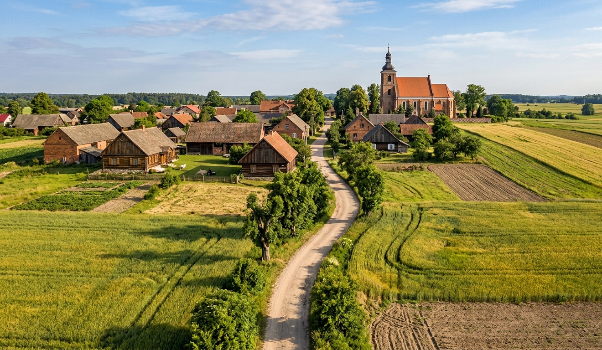
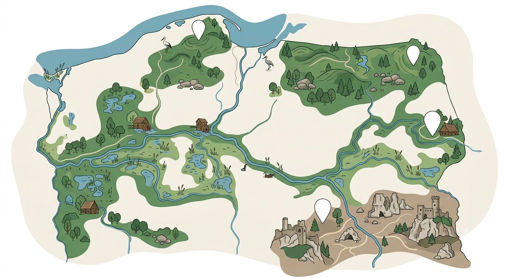
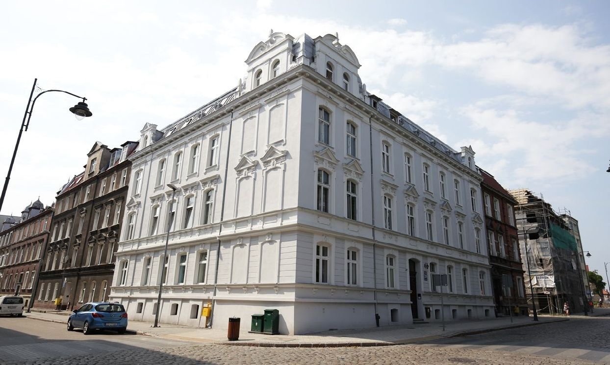
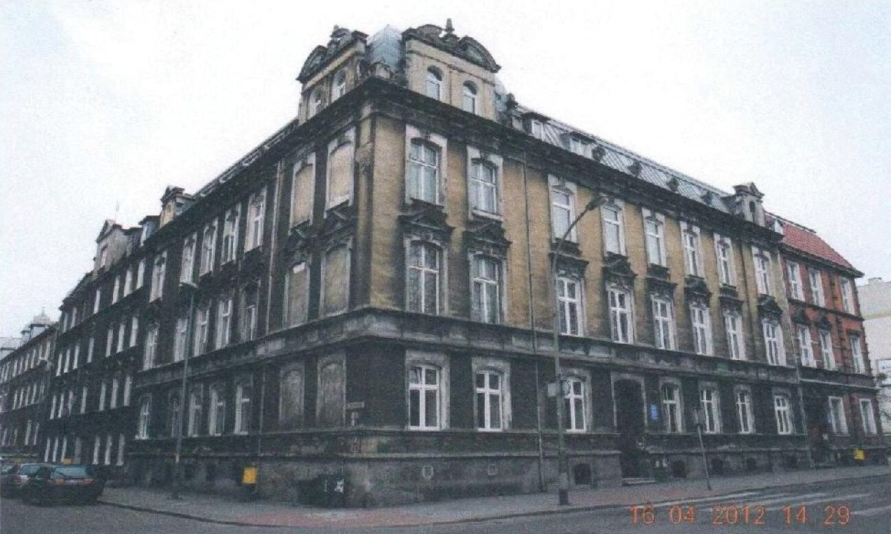

Niewiele zmieniony przez człowieka – dominują w nim lasy, jeziora i naturalna rzeźba terenu.
Przykład: Bieszczady, Puszcza Białowieska01
Czym właściwie jest krajobraz?
Krajobraz to wszystko, co widać w danym miejscu: ukształtowanie terenu, wodę i roślinność, ale też budynki, drogi i pola. Przyroda i działalność człowieka splatają się tu w jeden, wspólny obraz przestrzeni.
Ukształtowany przez wieki ludzkiej działalności – widać w nim historię miejsca.
Przykład: stare miasta, wiejskie zagrody, aleje przydrożneZdominowany przez zabudowę, ulice i infrastrukturę.
Przykład: centra miast, dzielnice mieszkanioweUformowany przez uprawę ziemi i hodowlę zwierząt.
Przykład: pola, sady, łąki kośne02
Krajobraz kulturowy – ślady ludzkiej historii
Krajobraz kulturowy powstaje tam, gdzie ludzie mieszkają od pokoleń. Tworzą go miasta, wsie, zabytki, drogi i pola uprawne – każdy element coś opowiada.

Zabudowa tradycyjna
Stare domy i zagrody pokazują, jak ludzie budowali, korzystając z lokalnych materiałów i sprawdzonych rozwiązań.
03
Co niszczy krajobraz?
Krajobraz traci wartość, gdy zabudowa rośnie bez planu, zieleń ustępuje betonowi, a zabytki niszczeją z zaniedbania.
Quiz: czy to pomaga chronić krajobraz?
Oceń każdą sytuację.
-
Budowa osiedla bez planu przestrzennego, prosto na łące.
-
Odnowienie zabytkowego budynku zamiast jego wyburzenia.
-
Wycięcie starej aleksji drzew pod nowy parking.
-
Tworzenie ścieżek edukacyjnych w parku krajobrazowym.
-
Zasypanie stawu, by zrobić miejsce na magazyn.
-
Sadzenie rodzimych gatunków drzew w mieście.
04
Jak chronimy krajobraz?
Ochrona krajobrazu to świadome decyzje: zachowanie zabytków, terenów zielonych i przemyślane planowanie nowej zabudowy.

Suwalski Park Krajobrazowy
Pojezierny krajobraz na Suwalszczyźnie, z wzgórzami morenowymi i głazami pozostałymi po epoce lodowcowej.
05
Rewitalizacja: druga szansa dla miejsca
Rewitalizacja to odnowa zdegradowanych obszarów – opuszczonych fabryk, zaniedbanych kamienic czy zarośniętych terenów. Zmienia się nie tylko wygląd, ale też jakość życia mieszkańców.


06
Rolnictwo, które oszczędza krajobraz
Rolnictwo ekologiczne ogranicza wpływ produkcji żywności na środowisko – dba o glebę, wodę i różnorodność biologiczną, korzystając z naturalnych metod.
Zbuduj swoje gospodarstwo – wybierz jedną opcję w każdym rzędzie
Ochrona roślin
Sposób uprawy
Woda
Bioróżnorodność
Wybierz opcje, aby zobaczyć, jak ekologiczne jest Twoje gospodarstwo.
07
Galeria krajobrazów
Zobacz różne oblicza krajobrazu i działania, które pomagają go chronić.
08
Sprawdź, co zapamiętałeś
Cztery pytania, jeden wynik – sprawdź swoją wiedzę o krajobrazie i jego ochronie.
0%